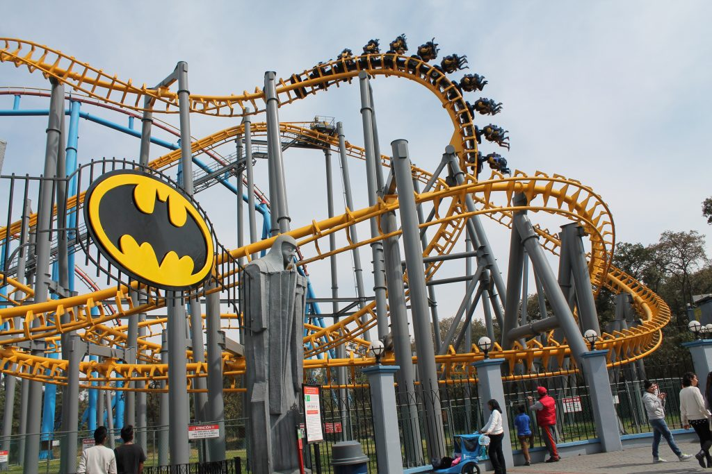
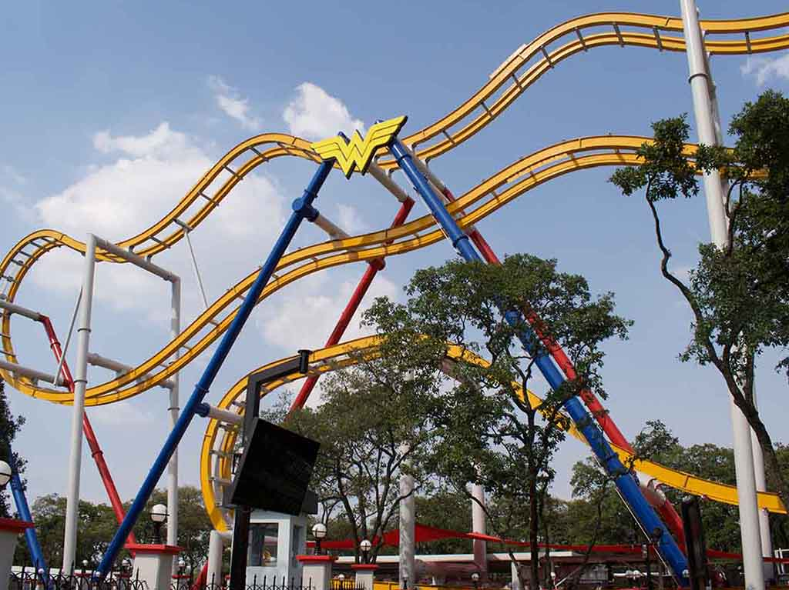
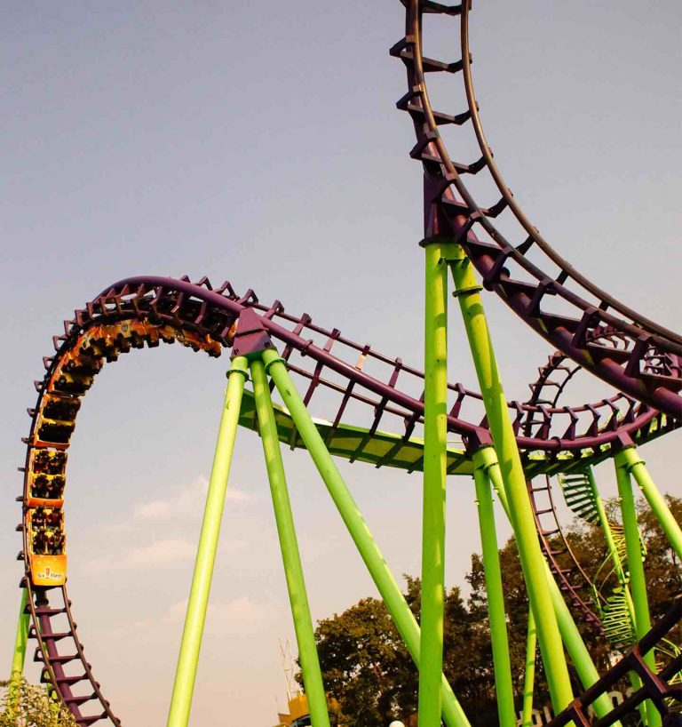

Six Flags
Superman El Último Escape
Superman El Último Escape, es una montaña rusa del tipo hypercoaster ubicada en el parque de atracciones Six Flags México.
Es una de las atracciones principales del parque, siendo muy demandada por los visitantes. Alcanza 120 km/h de velocidad máxima,
tiene 67 metros de altura, una caída de 62,5 metros con una inclinación de 60° y tiene una longitud de 1706.9 metros.
Esta montaña rusa, una de las más grandes y rápidas, consta de tres trenes de 6 vagones para 6 personas cada uno, con un total de 36 personas por tren. La atracción es monitoreada por tres ordenadores, con sensores
inductivos que coordinan las diferentes estaciones de frenos a lo largo del recorrido. Cada pasajero cuenta con una barra y cinturones de seguridad sistemas que garantizan disfrutar de la atracción. La estatura mínima
para entra a la atracción es de 1,3 m. El punto más alto de la atracción se encuentra en la cima de la subida, que alcanza los 67 metros de altura, siendo visible parte de la Ciudad de México. Fue abierto en noviembre de
2004 y en mayo de 2007, alcanzó su pasajero número 1 000 000

Batman The Ride
Información de la atracción
Nivel de emoción: Maximum
Altura mínima: A partir de 1.30 m podrán ingresar solos.
Ubicación en el parque: Villa Hollywood
Pase FLASH: Regular y Platinum
Bienvenidos a ciudad Gótica, hogar de uno de los principales integrantes de la Liga de la Justicia.
La estructura de Batman descansa sobre dados de cimentación hasta de 2 m de profundidad. Dicha profundidad se calcula a partir de un estudio de las propiedades del suelo del lugar donde se va a instalar una montaña rusa. Cálculos por supuesto, que requirió Bruce Wayne.
Prepárate a subir a 32 metros y rodar libremente hasta velocidades de 80 kilómetros por hora colgado del tren de Batman The Ride.
En el camino, el juego te hará girar y te pondrá de cabeza. Sentirás que flotas y luego que el estómago se te va a los pies.
¡Pero no corres peligro! La fuerza centrífuga te mantendrá en tu sitio. La fuerza centrífuga te empuja hacia fuera de una curva cuando el vehículo va rápido o la curva es muy cerrada.
La fuerza centrífuga se usa también para entrenar pilotos y astronautas. El piloto se sienta en una silla sujeta al extremo de un brazo giratorio. La fuerza centrífuga simula las fuertes aceleraciones que se sienten en una nave espacial.
¡Enfrenta tu miedo a los murciélagos!
Wonder woman Coaster
Esta roller coaster presenta una temática basada en la icónica superheroína de DC, Wonder Woman. Su diseño exclusivo ofrece a los visitantes una experiencia única. Los pasajeros van suspendidos en ambos lados de las vías e irán girando durante el recorrido. Es la única atracción en Latinoamérica con el revolucionario sistema 4D Free Fly Coaster.
Boomerang
El boomerang es un invento de los aborígenes australianos. Sirve para cazar y en su vuelo va dando vueltas. Un boomerang bien lanzado regresa a la mano del cazador. El Boomerang de Six Flags México hará lo mismo contigo. Boomerang es la única montaña rusa de este parque que no empieza subiendo una cuesta para acumular energía potencial. En vez de eso, Boomerang acelera hasta alcanzar la energía cinética necesaria para hacer los giros y subir hasta su altura máxima de 37 metros. Luego hace el recorrido en reversa.
